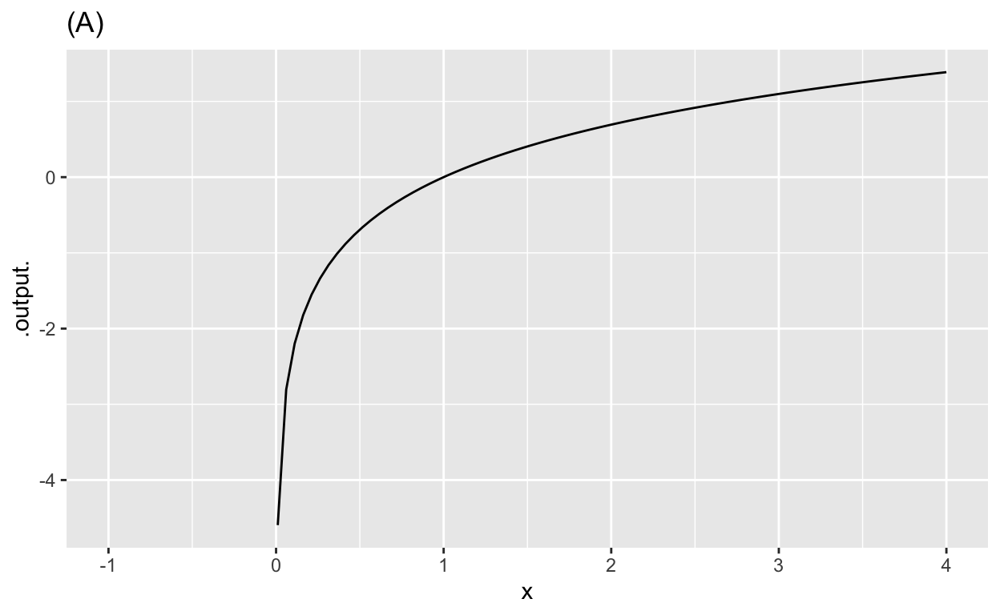
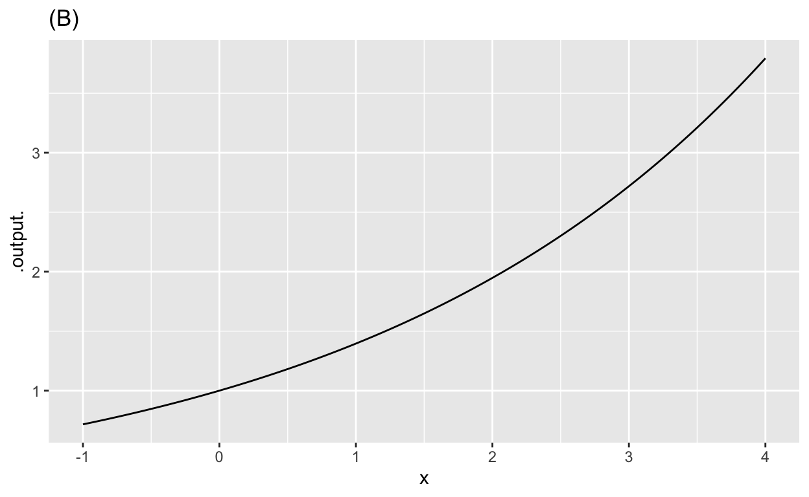
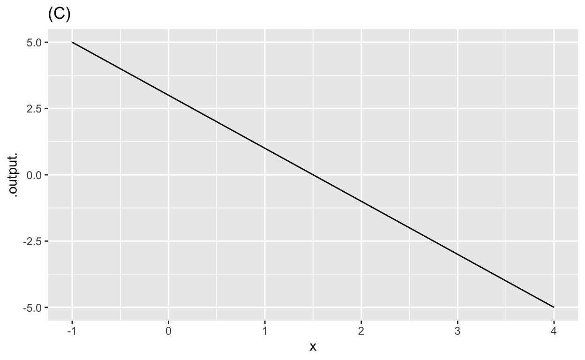
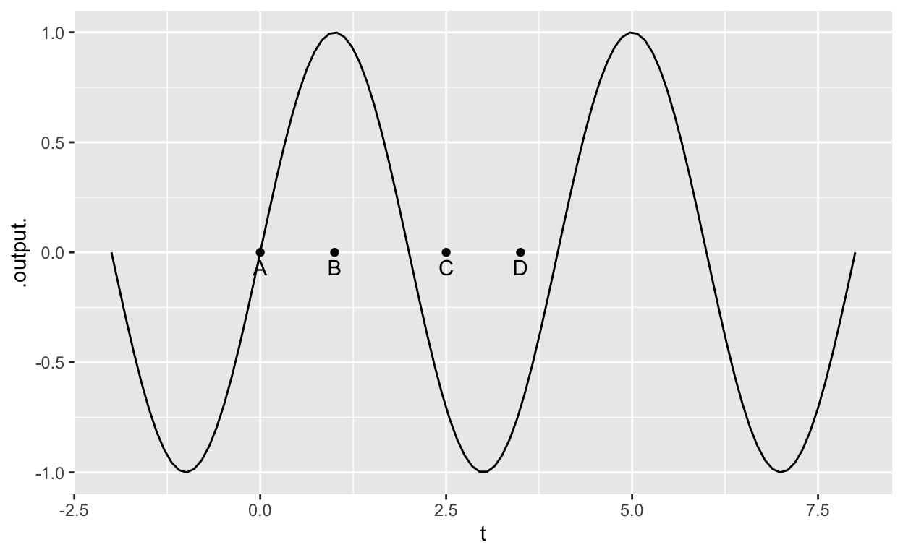

Some years ago, you learned to calculate the slope of a straight-line function. If you had a graph, you would mark out a run and the corresponding rise, then compute rise/run. If you had a formula definition, e.g. \(f(x) \equiv 3 - 4 x\), you would simply read the slope off as the coefficient on the function input. Here, the input is named \(x\) and its coefficient in the formula is \(-4\).
In this question, we ask you to estimate the slope from a graph of the function. But the function is exponential, so not a straight line.
A fundamental idea in calculus is that even a function with a curved graph, if you zoom in closely around a given point, will look like a straight line. And you know how to calculate the slope of a straight line.
When the graph is curved, the slope will be different at different points along the graph. So there’s not a single slope for the function. Still, we can talk about the “slope at a point.”
One way to specify a point on a function’s graph is to give the horizontal coordinate: the input to the function. But here we’re going to give you the output of the function.
Estimate the slope of the exponential function \(g(x) \equiv e^x\) at several inputs, which we’ll call \(x_1\), \(x_2\), \(x_3\) and \(x_4\). We won’t give you numerical values for the \(x_i\) points, but we will tell you the output of the function at each of those inputs. the values of \(x\) where:
The code sandbox below already contains an R command to plot out the mathematical exponential function over the domain \(-3 \leq x \leq 3\). For each of (a)-(d), modify the command to zoom in on the domain around around the appropriate value of \(x_i\). Then calculate the slope of the curve at that \(x_i\).
slice_plot(exp(x) ~ x, domain(x = c(-3, 3)))Now that you’ve found the answer and seen how to specify the domain on a slice plot, here’s a technique that can make your work a bit easier. Add this to the command that plots \(e^x\) on the domain \(-3 \leq x \leq 3\)
%>% plotly::ggplotly()Make sure the %>% is on the same line as the slice_plot() expression itself. Run the amended command then hover the cursor over the graph.
Reflection: One goal of this problem is to introduce you to a way of writing about functions that is somewhat different than you may have seen before.
There are good reasons why to start to make simple distinctions that might have been ignored or glossed over in high-school math.
The graph shows three different functions labeled (A), (B), and (C).

The graph shows a function \(\mbox{wave}(t) \equiv \sin(2 \pi t/4)\) and labels four input values \(t\).

Refer to the contour graph of function \(f(x, y)\) on MMAC page 34 at the top of the right column.
Do textbook exercises 1-7 in §1.3 on paper. Hold on to the paper so you can hand it in at the appropriate time.
Consider total United States health expenditures as a percentage of gross domestic product (GDP) each year.
| Year | Percent_GDP |
|---|---|
| 2009 | 17.71 |
| 2010 | 17.66 |
| 2011 | 17.68 |
| 2012 | 17.91 |
The linear function
\[f(x) \equiv 0.062 x - 106.911\] is a reasonable straight-line model of this data set. Imagine that the domain of \(f()\) is the whole real line. State the value requested and explain the meaning of the quantity.
Refer to the 8 function definitions on page 51 at the top of the right column. Each of the functions is piecewise linear. Over each piecewise domain the function is either increasing, constant, or decreasing with respect to input \(x\). Select the right answer for each of these domain pieces.
In this class we will almost exclusively be dealing with functions that take quantities as inputs and produce a single quantity as an output. (In Block 2, we’ll start to look at inputs and outputs that are vectors, that is, collections of quantities.)
But functions can take as inputs and produce as outputs things that are not quantities. For instance, words or labels (which, in statistics are called levels of a categorical variable).
Open up a new tab in your web browser and navigate to this web site: https://what3words.com/butterfly.fortune.clings (We ask you to open a new tab so that you don’t lose your place in the Daily Digital document.)
You reasonably think of this as a URL, an address on the web. But actually, the web server is set up differently. The function name is https://what3words.com. When you navigate there, the function is being evaluated for three inputs, each of which is a word. In our notation, we would write:
\[\mbox{what3words.com}(\mbox{"butterfly"}, \mbox{"fortune"}, \mbox{"clings"}) \]
The output of the function is a location, displayed on a map because that’s convenient for human users who are trying to find a location specified in the three-word system. (You might have to zoom out to make sense of the location. It happens to be the location of Dr. Brilleslyper’s and Dr. Kaplan’s offices, which are adjacent. The three-word system doesn’t have a mechanism for specifying altitude. Those offices are on the 6th floor of the building.)
For using the system, you need to be able to calculate the inverse function, that is, turning location into the corresponding three input words.
An important concept (that we have not yet encountered in this course) is continuity. Continuity means that a small change in the input produces a small change in the output.
In the class lesson, we point out that a function with two or more quantities as inputs and a quantity as an output does not have an inverse. That is, each output cannot be associated with a unique input.
Yet the what3words.com system, to be useful in communicating location over a noisy channel such as a telephone, needs to have an inverse. The next question is hard, and involves some math you have not studied, but give it your best try:
Finally, a note about discontinuity. The location year.nibbles.glasses is in USAFA. The location year.nibble.glasses is in Baja California. So even if the words are easier to transmit than the many digits of latitude and longitude, the system still leaves plenty of space for mischief and error. what3words.com would have been well advised to add a fourth word to their system, which would enable them to implement error correction.
Location: CalcZ/_DailyDigitals/DailyDocuments/inst/141Z-Daily-digitals/DD-141Z-02/DD-141Z-02.Rmd 141Z-DD02